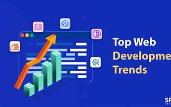

Published on Friday, Feb 10, 2025
Web development continues to evolve rapidly with new trends and technologies. In 2025, several exciting trends are expected to dominate the industry, from advanced JavaScript frameworks to serverless architecture and AI-driven solutions. Let’s dive into these emerging trends that will shape the future of web development.
Let’s explore these trends in detail and understand how they are impacting web development:
JavaScript frameworks like React, Angular, and Vue.js have become indispensable in creating dynamic web applications. These frameworks offer scalability, better performance, and efficient development processes, making them a must-know for developers in 2025.
Serverless computing is a revolutionary approach that abstracts away the infrastructure. Developers focus on writing functions without worrying about server maintenance. This allows for cost efficiency and scalability, as it only charges based on the actual usage.
AI-driven features such as chatbots, personalization algorithms, and voice recognition are becoming standard in web applications. These technologies are being integrated to automate repetitive tasks and provide users with more personalized experiences.
PWAs bring mobile-like features to the web, including offline access and push notifications. They can be installed on users’ devices, offering the best of both worlds, which significantly improves user retention and engagement.
Motion UI is not just about visual appeal. It enhances interaction by guiding users through transitions and providing feedback. Smooth animations can improve navigation and make websites feel more interactive and responsive.
In the coming years, web development will continue to evolve, with AI becoming more embedded into applications, increased reliance on serverless technologies, and the further rise of modern JavaScript frameworks. It's crucial for developers to stay updated with these trends to build future-proof websites.
As we move into 2025, these web development trends are shaping the future of the industry. By adopting new technologies like JavaScript frameworks, serverless architecture, and AI integration, developers can create more efficient, scalable, and user-friendly web applications. Stay ahead by embracing these trends and incorporating them into your development practices.